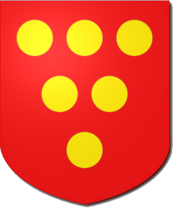

On the previous page we learnt about ordinaries, large shapes that stay in the same place on the shield. Usually there is only one ordinary on each shield, but sometimes you may see them combined with a chief.
But as well as ordinaries we call also add Charges to our shield. Charges are little images, sometimes geometric shapes, but more commonly pictures of creatures, weapons and many other types of object. Unlike ordinaries, we can have one, two, three or even more charges on our shield.
Let us start by looking at a simple geometric charge, the roundel (a circle). We can have any number of these, but in blazonry we seldom have to count higher than 12, and smaller numbers are MUCH more common than higher ones! Let us look at a complete blazon using roundels, which is illustrated here.
Gules, six roundels or
Some things to note here - the number comes BEFORE the charge, the colour comes AFTER. You can use words or digits for the number, it doesn't really matter. We can also see that the roundels have been arranged nicely on the shield. There are automatic arrangements for all numbers of charges, depending on where they are placed and what else is on the shield. Later we will see ways to make our own arrangements, but for the moment try various different numbers of roundels and see how they are arranged. You could also try adding a chief (remember to give it a colour) and see what happens to the position of the roundels.
This brings up an important point, in most blazons you tend to find things in the order field -> ordinaries -> charges, for example:
Argent, a chief vert, 3 roundels gules{% include quickimage.html %}
Feel free to try that out in the box to the right. Here are some other charges that you can experiment with:
Geometric shapes: lozenge (a diamond), mullet (a star shape), annulet (a ring).
Animals: lion, chough (like a blackbird), unicorn
Objects: sword, crown, harp
When you are finished, move on to the next page and we will test what you have learnt so far!